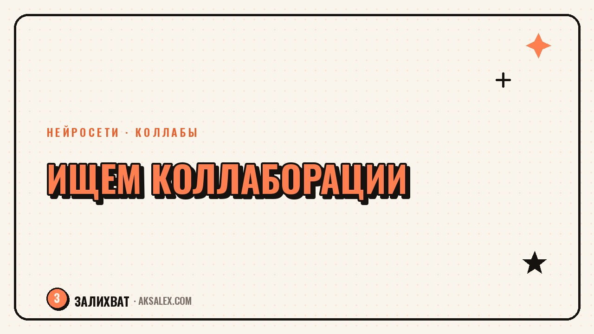

Коллаборации блогеров: как найти партнёров

Коллаборация с другим блогером - самый недооценённый способ вырасти без бюджета на рекламу. Ты получаешь новую аудиторию, которая уже доверяет рекомендации, а не рекламному баннеру. Проблема в другом: найти подходящего партнёра, придумать формат и написать предложение, которое не отправят в спам, занимает время. Нейросети не найдут за тебя человека с похожими ценностями, но заметно ускорят подготовку - от списка кандидатов до текста письма.
Кого искать: критерии, а не только размер аудитории
Самая частая ошибка - выбирать партнёра по числу подписчиков. Блогер с полумиллионом охватов и мамами в целевой аудитории не даст ничего блогу про финансы для айтишников. Совпадение аудитории важнее размера.
- Похожая или соседняя тема, но без прямой конкуренции за одну и ту же нишу
- Сопоставимый размер аудитории - разница в 3-5 раз ещё рабочая, в 20 раз уже нет
- Похожая манера подачи: если ты серьёзная, а партнёр только шутит, аудитории не совпадут по ожиданиям
- Активная, а не мёртвая аудитория - смотри на комментарии, а не только на подписчиков
Нейросеть здесь помогает на этапе анализа: загрузи описание своей аудитории и попроси накидать список тематик и форматов блогов, с которыми стоит поискать пересечение. Дальше руками проверяешь конкретных людей.
Как искать кандидатов быстрее
Ручной поиск через рекомендации в ленте работает, но медленно. Ускорить процесс помогают несколько приёмов.
Разбор комментариев
Посмотри, кто активно комментирует посты блогеров в твоей тематике - это часто и есть будущие партнёры среднего размера, которые ещё не избалованы предложениями о коллаборации.
Подборки и рейтинги
Попроси нейросеть собрать список форматов запросов для поиска: подборки блогеров по нише, хэштеги, тематические каталоги. Это не даст готовых имён, но сузит область поиска в разы.
| Способ поиска | Плюс | Минус |
|---|---|---|
| Рекомендации в ленте | Совпадение по интересам уже есть | Мало вариантов за раз |
| Комментарии под чужими постами | Видно живую активность | Требует времени на просмотр |
| Тематические подборки и каталоги | Много кандидатов сразу | Не всегда актуальные данные |
| Взаимные знакомые блогеры | Высокое доверие с порога | Ограниченный круг |
Форматы коллабораций, которые реально работают
Совместный формат должен решать задачу обеих сторон, а не быть просто поводом отметить друг друга. Вот форматы, которые чаще всего доходят до результата, а не остаются разовой активностью.
- Взаимное интервью - ты в гостях у партнёра и наоборот, в формате вопрос-ответ
- Совместный чек-лист или гайд, который каждый публикует у себя
- Марафон или челлендж на неделю с общим хэштегом
- Разбор одной темы с двух разных точек зрения
Лучшая коллаборация выглядит как естественное продолжение контента обеих сторон, а не как реклама друг друга в один заход.
Как написать предложение, на которое ответят
Короткое обезличенное сообщение вида "привет, давай коллаборацию" почти всегда игнорируют. Работает конкретика: что именно ты предлагаешь, почему именно этому человеку и что получит он.
Здесь нейросеть экономит время на черновике: опиши свою идею, аудиторию и площадку партнёра, и получишь структурированный текст письма. Дальше добавь личные детали - что тебе нравится в его контенте, почему выбрала именно его - и отправляй.
Частые ошибки при коллаборациях
Даже удачно выбранный партнёр не спасёт коллаборацию, если пропустить организационные детали.
- Нет чёткой даты публикации у обеих сторон - материал выходит вразнобой
- Не обсудили заранее, кто что публикует и в каком формате
- Забыли договориться об упоминаниях и ссылках друг на друга
- Одна сторона готовится, вторая тянет до последнего дня
Частые вопросы
С чего начать поиск партнёра для коллаборации?
С определения аудитории: кому будет полезен твой контент помимо твоих текущих подписчиков. Дальше ищи блогеров именно с этой аудиторией, а не с самым большим количеством подписчиков.
Может ли нейросеть сама найти конкретных блогеров для коллаборации?
Она подскажет тематики, форматы и запросы для поиска, но конкретных живых людей и их актуальность в моменте нужно проверять руками.
Как понять, что коллаборация не сработает?
Если аудитории пересекаются меньше чем на 20-30% по интересам или манере подачи, результат обычно слабый - подписчики не переходят и не остаются.
Стоит ли делать коллаборацию с блогером в 10 раз крупнее?
Можно, но не жди равного обмена. Обычно в такой связке крупный партнёр даёт охват, а маленький - свежий формат или узкую экспертизу.
Как часто делать коллаборации, чтобы не выглядело как спам?
Раз в месяц-полтора вполне достаточно. Если делать чаще, аудитория начинает воспринимать это как рекламный конвейер, а не как живое партнёрство.
Раз тема оказалась полезной, вот что почитать следующим. Как нейросети помогают не терять клиентов в директе и отвечать быстрее без потери тепла в переписке.
Читать статью →а не вручную